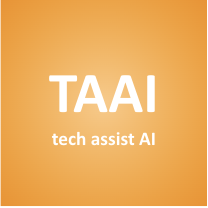
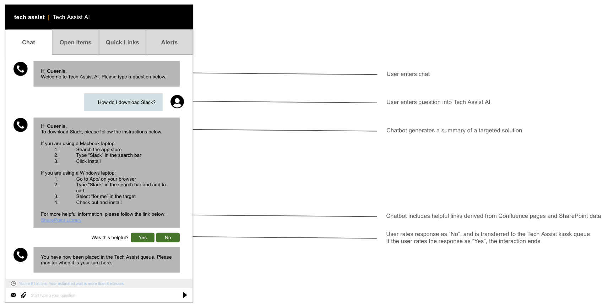
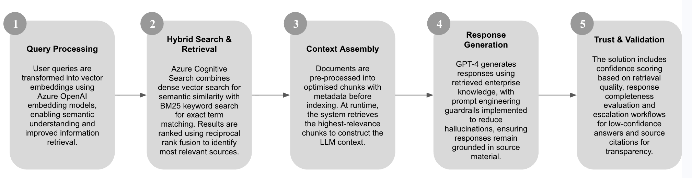

The Problem: Long Wait Times, Zero Visibility
At Macquarie Group, employees visiting Tech Assist kiosks faced 10-15 minute wait times for routine issues like password resets, Global Protect troubleshooting, and software downloads. There was no queue visibility, and Tech Assist teams were overwhelmed with repetitive queries that could be automated. This resulted in over 2,500 employee hours wasted monthly and significant productivity loss across the organisation.
The core issue was clear: employees needed instant, 24/7 access to tech support for common questions, while Tech Assist needed to focus their expertise on complex technical problems that truly required human intervention.
The Solution: AI-Powered Self-Service Support
I worked with a team of 5 to design and build Tech Assist AI (TAAI), an intelligent chatbot powered by Azure OpenAI GPT-4 that provides instant tech support by searching internal knowledge bases (Confluence and SharePoint). Using retrieval-augmented generation (RAG) architecture, TAAI answers questions in under 3 seconds with source citations, reducing wait times from minutes to near-zero.
How it works:
1. User asks a question
"How do I install Slack?"
2. System searches
Hybrid vector + keyword search across 10,000+ internal documents
3. AI generates response
GPT-4 creates contextual answer using retrieved documentation
4. User receives answer
Response with source citations in 3 seconds
5. Smart escalation
If confidence is low or issue is complex, seamlessly hands off to Tech Assist and places the customer in the queue
Key Capabilities:
Design Mockup

Technical Architecture: Building for Scale and Accuracy
The core challenge was ensuring accurate, trustworthy responses at scale. I architected a comprehensive RAG pipeline alongside a fellow engineer in the team that prioritises retrieval quality and response reliability:
RAG Pipeline:

Tech Stack
Business Impact
The business case for TAAI was compelling. By deflecting 40-60% of routine queries, the system would save approximately 2,500 employee hours per month while operating at a fraction of the cost:
$2,270
Monthly Operating Cost
Azure OpenAI, Cognitive Search, hosting
60%+
Resolution Rate
Queries resolved without human intervention
2,500
Hours Saved Monthly
Employee time recovered
24/7
Availability
Zero wait times, instant access
Beyond cost savings, TAAI provides data insights on common tech issues, enables continuous knowledge base improvement, and frees Tech Assist teams to focus on complex problems requiring human expertise.
Implementation & Go-to-Market Strategy
My role in the team focused on end-to-end product development from problem identification through technical architecture to launch strategy. This included:
Technical Implementation:
Multi-Channel Marketing Strategy:
Email Campaign
Organisation-wide announcement on Viva Engage
Physical Presence
Posters at 10 Tech Assist kiosk locations in Sydney with QR codes for instant access
SharePoint Integration
Hero banner on homepage with embedded chat widget
Champions Network
Early adopters to drive word-of-mouth adoption
Technical Challenges & Solutions
Future Enhancements
The architecture was designed with extensibility in mind, enabling future capabilities including:
Key Takeaway
Tech Assist AI showcases an end-to-end approach to enterprise AI solution design, from identifying a business challenge and defining measurable success criteria, through to designing a scalable RAG architecture and planning adoption strategies.
The project demonstrates the ability to bridge business needs and technical execution by combining AI engineering principles, solution architecture, stakeholder alignment and change management to deliver responsible AI solutions that create measurable organisational value.